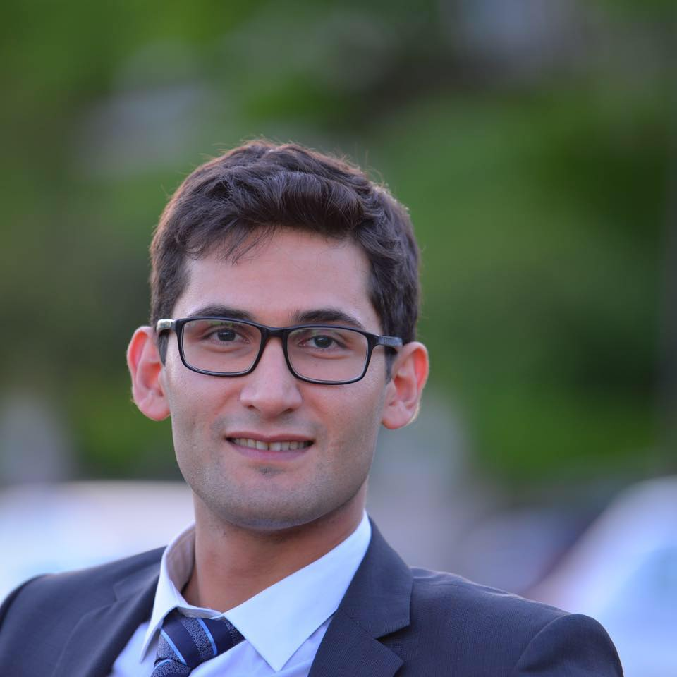

Principal Investigator

Hamid Jafarnejad Sani, Ph.D.
hjafarne [at] stevens [dot] edu
Homepage
Dr. Hamid Jafarnejad Sani is an Assistant Professor in the Department of Mechanical Engineering at Stevens Institute of Technology and the director of the Safe Autonomous Systems Lab (SAS Lab). Before joining the faculty at Stevens, he was a postdoctoral research associate in the Department of Computer Science at the University of Illinois at Urbana-Champaign (UIUC). Hamid received his Ph.D. degree in Mechanical Engineering from UIUC in 2018, where he worked in the Advanced Controls Research Laboratory. He got his B.S. and M.S. degrees both in Mechanical Engineering from the University of Tehran in 2011 and the University of Calgary in 2013, respectively. His research interests include control, optimization, robotics, machine learning, and cyber-physical security. In particular, he is interested in resilient control of intelligent autonomous systems in uncertain and adversarial environments.